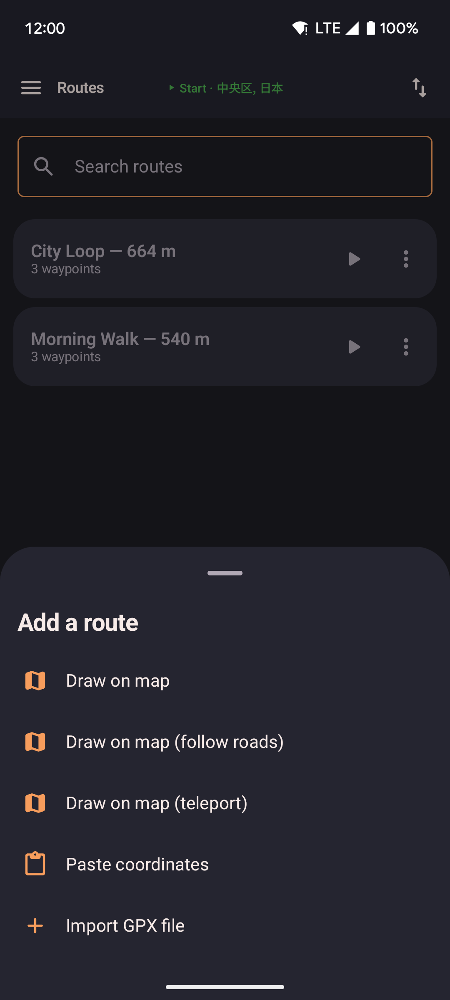

Routes
Place a series of stops on the map and play them back at whatever speed you choose. Routes can follow straight lines between stops, or snap to real roads. All of your route data stays on your device — see the privacy policy.

- Tap the add button to create a new route by placing stops on the map, pasting coordinates, or importing a file.
- Tap a saved route to start it. Playback jumps to the first stop, then follows the path. You can loop it, reverse it, or have it return to the start.
- A search box at the top of the list finds a route by name as you type. The map's routes sheet has the same box. From the floating widget, tap the search icon next to the close button to open it. Closing the list clears what you typed.
- Sort routes A–Z, Z–A, newest saved, or oldest saved. The same choice applies to the floating widget's route list.
- While a route is playing, a count like
3/12at the bottom of the map and widget button lists shows which stop you're on. - The three-dot menu on a saved route lets you edit it, share its coordinates, export it, or delete it. Share shows every stop as
lat, lonlines you can copy or send as a message. - The floating widget's route detail also has rename, share, and delete buttons. It closes before the phone's share sheet appears, so neither panel covers the other.
- Import a route from a GPX file, or draw one on the map, using the add button. Very large routes (thousands of points) are skipped, and a message tells you how many were left out.
How to add a route
Tap the add button at the bottom-right of the Routes screen to start a new route.

- The button opens a menu with every way to add a route.
- Choose "Draw on map" to place stops by hand, "Draw on map (follow roads)" to snap them to real streets, "Draw on map (teleport)" to jump between stops, "Paste coordinates" to build a route from a list of points, or "Import GPX file" to import an existing route.
- You can also open a GPX file from another app (Files, Downloads, Share, or a chat app). This app appears in the list of apps that can open it, even when the other app sends it as a generic document. It does not appear for photos or app installer files. The map then shows the same Start sheet as paste coordinates, with the path filled in. Save keeps the original file name unless the file already has a name inside it. Teleport, Walk, and Start work the same as paste. If the app is already open, that sheet still appears. If the file is not a GPX, a short message says it could not be opened.
Route types
| Type | How it works |
|---|---|
| Straight | You move between stops in straight lines at your current speed. No internet connection is needed. This is the default for imported routes. |
| Guided (road-following) | Each stretch between stops is sent to an online road routing service at router.project-osrm.org, which sends back a path that follows real roads. The Walk and Run speeds use walking directions; the Bike speed uses cycling directions. If the service can't be reached, that stretch falls back to a straight line. The road path is saved after it's fetched once, so later replays don't need to look it up again. |
| Teleport | You jump straight to each stop instead of walking there. When you place a stop while drawing this kind of route, you're asked how many seconds to stay there before jumping to the next one (at least 1 second). During playback, you stay at each stop for the time you set, then jump straight to the next one — no movement in between. Follow roads has no effect on this route type, since nothing walks between the stops. |
Replay options
Tapping play on a saved route opens a sheet with these options. Cancel and Start sit at the bottom of that sheet — you should not need to drag it up to reach them.
| Option | Description |
|---|---|
| Loop | Checked when you open the sheet. Once you reach the last stop, playback starts over from the first. It keeps going until you stop it yourself. |
| Planting | Walks a circle around each saved stop during playback, instead of through its center. The saved route is not changed. After the last circle, playback walks back to the start of the first circle and repeats until you stop it. Loop is turned on automatically. Combine with Follow roads to travel between circles along roads. Combine with Teleport between waypoints to walk each circle, then jump to the next one. |
| Reverse | Plays the stops in reverse order, from last to first. You can combine this with loop. |
| Return to start | After the last stop, you walk back to the first one before stopping. This avoids a sudden jump in position when the route ends. |
| Follow roads | Not available for teleport routes. When checked, movement between each stop follows real roads instead of a straight line. If jump-to-location options are hidden in Settings, this also applies to the walk to the first stop before playback starts. With Planting also on, only the travel between circles follows roads — the circles themselves stay round. |
| Teleport between waypoints | Jumps from stop to stop instead of walking the stretches in between. Playback waits at the first stop, then after each jump waits again so other apps still see you there — 8 seconds unless you change the delay box next to the checkbox (0 still waits a short moment so jumps do not all happen at once; the longest wait is 10 minutes). With Planting also on, each circle is walked all the way around, then you jump to the start of the next circle — the same as skipping ahead by hand. Hidden when jump-to-location options are turned off in Settings. |
| Teleport | Jump straight to the route's first stop without starting playback. Press Start afterward when you're ready. Hidden when jump-to-location options are turned off in Settings. This still jumps to the stop itself when Planting is on. |
| Start | Jumps to the first stop (or the last stop, if Reverse is checked) and begins playback. Loop is on unless you turn it off. If Planting is on, playback then walks a circle around each stop. If Teleport between waypoints is on, playback waits at the first stop, then jumps to the next and waits again — 8 seconds unless you change the delay box. If jump-to-location options are turned off in Settings, you walk to that point first instead. |
| Pause / Resume | Pauses movement while holding your current position in place. Available from the widget and the map while a route is running. You can steer with the joystick while a route is paused. Resume jumps to the next stop, then continues the route from there. Pause or stop the route to start roaming. |
| Previous / Next stop | Jump straight to the stop before or after the one you're on, without waiting for the app to walk there. Available from the widget and the routes screen while a route is running. On a teleport route, jumping to a stop always restarts its full wait time, even if you'd already been waiting there before. With Teleport between waypoints on, you land on that one stop and wait there for the same delay as the automatic jumps, then playback continues — Previous does not stay put, and Next does not skip an extra stop. |
Paste coordinates
Paste a list of coordinates to turn them into a saved route. The app cleans up messy text:
numbered lists, emoji, coordinates that used a dot instead of a comma between lat and lon,
and degrees-minutes-seconds copied from a map app (for example
37°34'11.4"N 127°00'17.9"E).
Headings and notes can stay in the list. Lines the app does not recognize are skipped as a
whole, so numbers in a note are not mistaken for a location.
Check Swap lat / lon order when the first number is longitude.
If you leave the app to copy more coordinates from another app, this screen stays open until you save or go back.
- As-is connects the cleaned points with straight lines. No internet needed.
- Walkable path follows real footpaths between the points. Needs internet for the first build; the path is saved so later replays work offline.
- Planting mode walks a circle around each pasted point (35 meters by default). Use this when you want to circle each spot instead of walking through its center. Travel between circles can be a straight line or via roads. To circle stops on a route you already saved, turn on Planting when you start playback instead — that does not change the saved route.
- Optimize proximity reorders the points so each stop is near the previous one, instead of keeping the pasted order.
One paste makes one route. A single point is enough for Planting mode (one circle). The other modes need at least two points.
The paste box on the map and on the floating widget is a quicker path. Exactly one valid point offers Teleport, Walk, and Walk via roads.
With two or more points it switches automatically to route actions, where you can save a named route or tap Start route to play the list right away (loop, reverse, return, follow roads, planting, and teleport between waypoints).
Save first as favorite intentionally keeps only the first point; Save route keeps the full sequence.
Starting without saving keeps one temporary route in your list named Temp Route from Paste. The next Start from paste replaces that one route only.
A route you saved under your own name stays, even if you pick the same title.
Opening a GPX file from another app uses this same box on the map. The title says Open GPX, the points are already filled, and Save route suggests the original file name when the path itself has no name. Chat apps may send the file as a generic document; this app still appears for those. It does not appear for photos or app installer files. If the app is already open, the sheet still appears. If the file is not a GPX, a short message says it could not be opened. The paste box grows up to 10 lines, then scrolls. The top and bottom edges fade so you can tell there is more. Select all and Clear all sit under it.
Route creator
Place stops by tapping the map. The route draws itself as a line as you add each point.

- Search for a location by name using the search button, backed by nominatim.openstreetmap.org.
- Undo the last stop you placed with the undo button.
- Choose between a straight line, road-following, or teleport before saving.
- On a teleport route, placing a stop asks how many seconds to stay there before jumping onward.
- Record mode: tap record to capture your phone's real movement as a new route as you walk.
Route detail
Edit an existing route: rename it, reorder or remove individual stops, or change how it moves between them.

- Drag stops in the list to reorder them.
- Tap a stop to highlight it on the map preview.
- Choose the speed this route plays back at from a dropdown, or leave it on "None" to use whatever speed is currently active. Hidden for teleport routes, since nothing moves between stops there.
- On a teleport route, each stop has an edit button to change how many seconds you wait there. A "Set wait time for all stops" button above the list sets the same wait time everywhere at once — handy for a route with many stops.
- On a teleport route, a "Randomize order" switch makes each run jump between stops in a random order instead of the saved order, picking a new random order again every time a looping route restarts.
- Switching a route from straight to road-following looks up the road path again the next time you start it.
- Delete the route for good from the action bar.
Hot routes
In Settings, under Routes, turning on Show hot routes adds a curated set of ready-made routes for popular event locations around the world: large walking areas, parks, and landmarks that come in handy for spoofing your location. This is off by default.
- Turning it off removes only the routes this feature added. Your own routes are never touched.
- The setting sticks across app restarts and is included when you export or import your data.
Import formats
| Format | Notes |
|---|---|
| GPX | A common file format for GPS tracks and routes. Both recorded tracks and planned routes are supported, and both come in as straight-line routes. Any elevation data in the file is ignored, since locationjoystick handles altitude separately through the GPS realism settings. |
| GPS Joystick | Export a GPX file from GPS Joystick, then import it from Settings. Named places become favorites, and each route is saved as straight-line segments. Routes with thousands of points are skipped, with a message telling you how many. |
| YAMLA | The export file from the YAMLA app. Favorites and speed settings come across; routes are imported as straight-line segments. |
| locationjoystick backup | The app's own backup format. Keeps everything, including route type, stops, and other details. Choose Add to merge it with what you already have, or Replace to overwrite it. |